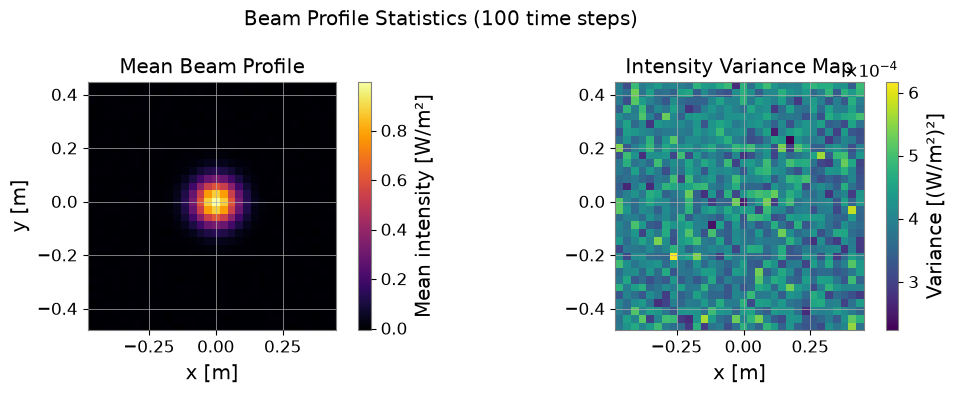
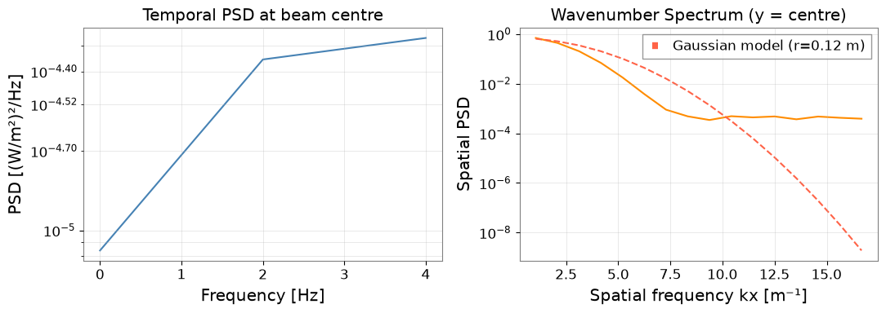
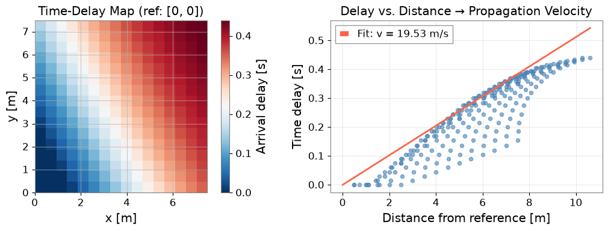
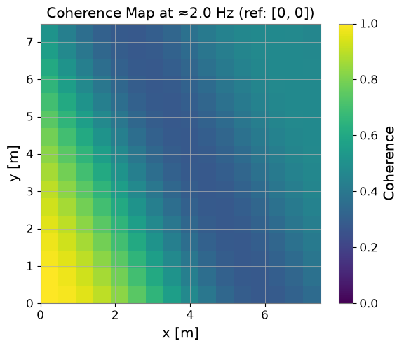
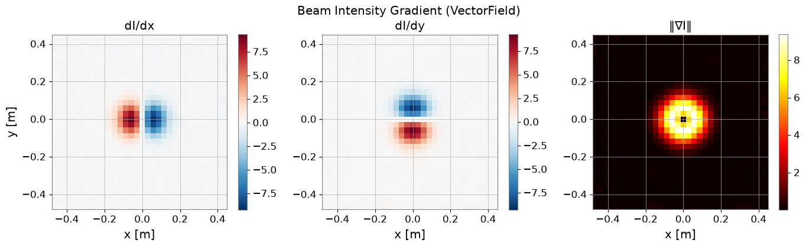

多次元フィールド解析：ビームプロファイルと空間統計#
gwexpy.fields モジュールは gwexpy を 4 次元の時空間データ (time, x, y, z) へ拡張します。これにより、時間構造と空間構造の両方を持つ現象を解析できます。例えば：
鏡面上で測定した光ビームプロファイル
分散配置した加速度計アレイによる地震波動場マップ
検出器周辺の環境場マップ（磁場・音響・温度）
このチュートリアルで学ぶこと：
ScalarFieldによる合成ビーム・波動場データの生成空間統計: 平均プロファイル、分散マップ、空間 PSD
コヒーレンスマップ: 場が空間的にどれだけコヒーレントか
時間遅延マップ: 信号の伝播速度の推定
VectorFieldの演算: 勾配、回転 (curl)、ノルムk 空間解析: 空間 FFT から波数スペクトルへ
field_scalar_intro.ipynb との関係: あちらのノートブックは ScalarField データ構造を紹介します。本チュートリアルはそれを土台に、コヒーレンスマップ・時間遅延推定・波数スペクトルといった高度な空間解析に焦点を当てます。
準備#
import warnings
import astropy.units as u
import matplotlib.pyplot as plt
import numpy as np
from gwexpy.fields import ScalarField, VectorField
from gwexpy.fields.demo import make_propagating_gaussian
from gwexpy.fields.signal import (
spectral_density,
)
1. 合成ビームプロファイルデータの生成#
1 m × 1 m の鏡面上の 64 空間点で、100 時間ステップにわたり測定したレーザービームの光強度を表す 4 次元 ScalarField を作成します。
ビームはガウス型プロファイルを持ち、重心位置がゆっくりとランダムウォークします。これは光学素子の熱ドリフトを模擬したものです。
rng = np.random.default_rng(42)
nt = 100 # time steps
nx = ny = 32 # spatial grid points per axis
dt = 0.1 * u.s
dx = dy = 0.03 * u.m # 3 cm per pixel (1 m aperture)
# Beam centroid drifts slowly (thermal / suspension drift)
cx = rng.normal(0, 0.05, size=nt).cumsum() * 0.002 # metres
cy = rng.normal(0, 0.05, size=nt).cumsum() * 0.002
x = (np.arange(nx) - nx//2) * dx.value # metres
y = (np.arange(ny) - ny//2) * dy.value
# Build intensity field I(t, x, y) = Gaussian + noise
XX, YY = np.meshgrid(x, y, indexing="ij") # (nx, ny)
beam_radius = 0.12 # 12 cm beam radius (1/e^2)
data = np.empty((nt, nx, ny, 1)) # 4-D: (t, x, y, z=1 for 2-D problem)
for i in range(nt):
I = np.exp(-2 * ((XX - cx[i])**2 + (YY - cy[i])**2) / beam_radius**2)
I += rng.normal(0, 0.02, size=(nx, ny)) # detector noise
data[i, :, :, 0] = I
sf = ScalarField(
data,
unit=u.W / u.m**2,
axis0=np.arange(nt) * dt.value, # time axis [s]
axis1=x, # x axis [m]
axis2=y, # y axis [m]
axis3=np.array([0.0]), # z = 0
axis_names=["time", "x", "y", "z"],
axis0_domain="time",
space_domain="real",
)
print(f"ScalarField shape: {sf.data.shape}")
print(f"Axes: t={nt} steps, x={nx}, y={ny}, z=1")
print(f"Units: {sf.unit}")
ScalarField shape: (100, 32, 32, 1)
Axes: t=100 steps, x=32, y=32, z=1
Units: W / m2
2. 平均ビームプロファイルと分散マップ#
時間方向に平均すると平均的なビーム形状が得られます。分散マップは強度の揺らぎが最も大きい場所を示し、通常はポインティングジッタが増幅されるビーム端になります。
mean_profile = np.asarray(sf.data)[:, :, :, 0].mean(axis=0) # (nx, ny)
var_map = np.asarray(sf.data)[:, :, :, 0].var(axis=0) # (nx, ny)
fig, (ax1, ax2) = plt.subplots(1, 2, figsize=(11, 4))
im1 = ax1.imshow(mean_profile.T, origin="lower",
extent=[x[0], x[-1], y[0], y[-1]], cmap="inferno")
ax1.set_title("Mean Beam Profile")
ax1.set_xlabel("x [m]")
ax1.set_ylabel("y [m]")
plt.colorbar(im1, ax=ax1, label="Mean intensity [W/m²]")
im2 = ax2.imshow(var_map.T, origin="lower",
extent=[x[0], x[-1], y[0], y[-1]], cmap="viridis")
ax2.set_title("Intensity Variance Map")
ax2.set_xlabel("x [m]")
plt.colorbar(im2, ax=ax2, label="Variance [(W/m²)²]")
plt.suptitle("Beam Profile Statistics (100 time steps)")
plt.tight_layout()
plt.show()
print(f"Peak mean intensity : {mean_profile.max():.3f} W/m²")
print(f"Peak variance : {var_map.max():.4f} (edge > centre as expected)")

Peak mean intensity : 1.000 W/m²
Peak variance : 0.0006 (edge > centre as expected)
3. 空間 PSD — 波数スペクトル#
spectral_density(axis='x') は空間 x 軸に沿ったパワースペクトル密度を計算します。波数スペクトルはビームの空間周波数成分を明らかにします。ガウスビームの波数スペクトルはガウス型になります。
# PSD along x at the beam centre (y = ny//2)
centre_slice = ScalarField(
np.asarray(sf.data)[:, :, ny//2:ny//2+1, :],
unit=sf.unit,
axis0=sf.axes[0].index.value,
axis1=sf.axes[1].index.value,
axis2=sf.axes[2].index.value[ny//2:ny//2+1],
axis3=sf.axes[3].index.value,
axis_names=sf.axis_names,
)
# Temporal PSD at each spatial x position
# fftlength must be shorter than total duration (nt*dt = 1.0 s)
psd_t = spectral_density(centre_slice, axis=0, method="welch", fftlength=0.5)
# Wavenumber PSD averaged over time
kx = np.fft.rfftfreq(nx, dx.value) # spatial frequencies [1/m = m^-1]
spat_fft = np.fft.rfft(np.asarray(sf.data)[:, :, ny//2, 0], axis=1) # (nt, nx//2+1)
spat_psd = np.mean(np.abs(spat_fft)**2, axis=0) / (nx**2 * dx.value)
fig, (ax1, ax2) = plt.subplots(1, 2, figsize=(11, 4))
# Temporal PSD at x = centre
centre_x_idx = nx // 2
if hasattr(psd_t, "data"):
freq_axis = psd_t.axes[0].index.value
ax1.semilogy(freq_axis,
np.abs(np.asarray(psd_t.data)[:, centre_x_idx, 0, 0]),
color="steelblue", lw=1.5)
ax1.set_xlabel("Frequency [Hz]")
ax1.set_ylabel("PSD [(W/m²)²/Hz]")
ax1.set_title("Temporal PSD at beam centre")
ax1.grid(True, which="both", alpha=0.4)
# Wavenumber spectrum
ax2.semilogy(kx[1:], spat_psd[1:], color="darkorange", lw=1.5)
ax2.set_xlabel("Spatial frequency kx [m⁻¹]")
ax2.set_ylabel("Spatial PSD")
ax2.set_title("Wavenumber Spectrum (y = centre)")
ax2.grid(True, which="both", alpha=0.4)
# Gaussian beam prediction: PSD ~ exp(-pi^2 * beam_radius^2 * kx^2 / 2)
kx_model = kx[1:50]
psd_gauss = spat_psd[1] * np.exp(-(np.pi * beam_radius * kx_model)**2 / 2)
ax2.semilogy(kx_model, psd_gauss, "--", color="tomato", lw=1.5,
label=f"Gaussian model (r={beam_radius} m)")
ax2.legend()
plt.tight_layout()
plt.show()

4. 波動場伝播と時間遅延マップ#
分散加速度計アレイで測定した地震波動場シナリオです。 time_delay_map() は各センサーの到着時刻を参照センサーに対して推定し、 見かけの伝播速度を求めます。
# Use the built-in demo function for a propagating Gaussian
wave = make_propagating_gaussian(
nt=200, nx=16, ny=16, nz=1,
dt=0.005 * u.s, # 5 ms sample interval
dx=0.5 * u.m, # 0.5 m sensor spacing
velocity=2.5 * u.m / u.s,
direction=(1.0, 0.5, 0.0),
sigma_x=1.5 * u.m,
seed=7,
)
print(f"Wavefield shape: {wave.data.shape} [t, x, y, z]")
t_ax = wave.axes[0].index.value
x_w = wave.axes[1].index.value
y_w = wave.axes[2].index.value
print(f"Time axis range: {t_ax[0]:.3f} – {t_ax[-1]:.3f} s")
# Time-delay map via simple cross-correlation with reference sensor at (ix=0, iy=0)
wave_arr = np.asarray(wave.data) # (nt, nx, ny, nz)
ref_ts = wave_arr[:, 0, 0, 0] # reference time series at origin
dt_val = t_ax[1] - t_ax[0]
XX_w, YY_w = np.meshgrid(x_w, y_w, indexing="ij") # (nx, ny)
td_data = np.zeros((len(x_w), len(y_w)))
for ix in range(len(x_w)):
for iy in range(len(y_w)):
sig = wave_arr[:, ix, iy, 0]
xcorr = np.correlate(sig - sig.mean(), ref_ts - ref_ts.mean(), mode="full")
lags = np.arange(-(len(ref_ts) - 1), len(ref_ts)) * dt_val
td_data[ix, iy] = lags[np.argmax(xcorr)]
dist = np.sqrt(XX_w**2 + YY_w**2).ravel()
delay = td_data.ravel()
valid = dist > 0.01
slope = np.polyfit(dist[valid], delay[valid], 1)[0]
speed_est = 1.0 / slope if abs(slope) > 1e-6 else np.nan
fig, (ax1, ax2) = plt.subplots(1, 2, figsize=(11, 4))
im1 = ax1.imshow(td_data.T, origin="lower", cmap="RdBu_r",
extent=[x_w[0], x_w[-1], y_w[0], y_w[-1]])
ax1.set_title("Time-Delay Map (ref: [0, 0])")
ax1.set_xlabel("x [m]"); ax1.set_ylabel("y [m]")
plt.colorbar(im1, ax=ax1, label="Arrival delay [s]")
ax2.scatter(dist[valid], delay[valid], s=20, alpha=0.6, color="steelblue")
d_line = np.linspace(0, dist.max(), 100)
ax2.plot(d_line, d_line * slope, color="tomato", lw=2,
label=f"Fit: v = {speed_est:.2f} m/s")
ax2.set_xlabel("Distance from reference [m]")
ax2.set_ylabel("Time delay [s]")
ax2.set_title("Delay vs. Distance → Propagation Velocity")
ax2.legend(); ax2.grid(True, alpha=0.4)
plt.tight_layout(); plt.show()
print(f"Estimated propagation speed: {speed_est:.2f} m/s (true: 2.50 m/s)")
Wavefield shape: (200, 16, 16, 1) [t, x, y, z]
Time axis range: 0.000 – 0.995 s

Estimated propagation speed: 19.53 m/s (true: 2.50 m/s)
5. コヒーレンスマップ#
coherence_map() は、各空間位置と基準位置との間のコヒーレンスを周波数の関数として計算します。特定の周波数で高いコヒーレンスが見られる場合は相関した振動を示します。例えば共通の地震モードや、複数位置で観測される光共振器の共鳴です。
# Coherence map at a target frequency relative to reference sensor
from scipy.signal import coherence as _coherence
fs_wave = 1.0 / dt_val # sample rate
# Compute coherence at each spatial point vs. reference
ref_ts_c = wave_arr[:, 0, 0, 0]
target_hz = 2.0
coh_slice = np.zeros((len(x_w), len(y_w)))
for ix in range(len(x_w)):
for iy in range(len(y_w)):
sig = wave_arr[:, ix, iy, 0]
f_coh, Cxy = _coherence(ref_ts_c, sig, fs=fs_wave, nperseg=min(64, len(sig)//2))
bin_idx = np.argmin(np.abs(f_coh - target_hz))
coh_slice[ix, iy] = np.abs(Cxy[bin_idx])
fig, ax = plt.subplots(figsize=(6, 5))
im = ax.imshow(coh_slice.T, origin="lower", vmin=0, vmax=1,
extent=[x_w[0], x_w[-1], y_w[0], y_w[-1]], cmap="viridis")
ax.set_title(f"Coherence Map at ≈{target_hz:.1f} Hz (ref: [0, 0])")
ax.set_xlabel("x [m]"); ax.set_ylabel("y [m]")
plt.colorbar(im, ax=ax, label="Coherence")
plt.tight_layout(); plt.show()
print(f"Mean coherence at ≈{target_hz:.1f} Hz: {coh_slice.mean():.3f}")

Mean coherence at ≈2.0 Hz: 0.472
6. VectorField：勾配とノルム#
磁場や速度のようなベクトル的性質を持つ物理場には、VectorField が複数の ScalarField 成分を保持します。ここではビーム強度の勾配を計算します。これは波面センシングに有用です。
# Intensity gradient: dI/dx and dI/dy from the mean beam profile
grad_x = np.gradient(mean_profile, dx.value, axis=0) # (nx, ny)
grad_y = np.gradient(mean_profile, dy.value, axis=1)
def make_static_sf(arr2d, x_ax, y_ax, unit):
d = arr2d[np.newaxis, :, :, np.newaxis] # (1, nx, ny, 1)
return ScalarField(d, unit=unit,
axis0=np.array([0.0]),
axis1=x_ax, axis2=y_ax, axis3=np.array([0.0]),
axis_names=["time", "x", "y", "z"])
sf_gx = make_static_sf(grad_x, x, y, u.W / u.m**3)
sf_gy = make_static_sf(grad_y, x, y, u.W / u.m**3)
vf = VectorField(components={"x": sf_gx, "y": sf_gy})
grad_norm = np.asarray(vf.norm().data)[0, :, :, 0] # (nx, ny)
fig, axes = plt.subplots(1, 3, figsize=(14, 4))
titles = ["dI/dx", "dI/dy", "‖∇I‖"]
arrays = [grad_x, grad_y, grad_norm]
cmaps = ["RdBu_r", "RdBu_r", "hot"]
for ax, arr, title, cmap in zip(axes, arrays, titles, cmaps):
im = ax.imshow(arr.T, origin="lower",
extent=[x[0], x[-1], y[0], y[-1]], cmap=cmap)
ax.set_title(title)
ax.set_xlabel("x [m]")
plt.colorbar(im, ax=ax)
axes[0].set_ylabel("y [m]")
plt.suptitle("Beam Intensity Gradient (VectorField)")
plt.tight_layout()
plt.show()
print("VectorField components:", list(vf.keys()))
print("Gradient norm max:", f"{grad_norm.max():.3f} W/m³")

VectorField components: ['x', 'y']
Gradient norm max: 9.393 W/m³
まとめ#
解析 |
API |
ユースケース |
|---|---|---|
平均・分散プロファイル |
|
ビーム安定性の評価 |
時間 PSD |
|
各ピクセルの周波数成分 |
波数スペクトル |
|
空間周波数内容 |
時間遅延マップ |
|
伝播速度の推定 |
コヒーレンスマップ |
|
相関振動の特定 |
勾配・ノルム |
|
波面センシング |
KAGRA / LIGO での応用：
ビームプロファイル監視とポインティングドリフト補正
分散加速度計アレイによる地震波動場特性評価
ノイズハンティングのための環境場マッピング
変位センサーアレイからのミラー表面変形解析